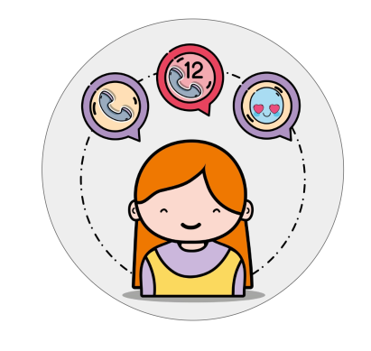

How is it used?
Dataen som blir innhentet fra “STAY” kan brukes for å lage en modell som viser hvordan ulike
variabler kan
påvirke hverandre, med andre ord lage en virtuell presentasjon av den fysiske verden med fokus på
fravær. Et
relevant eksempel med dagens situasjon er pandemien knyttet til Covid-19. I dette tilfellet er det
gunstig å
bruke regresjonsanalyse for å analysere det uavhengige variablet. Med hjelp av appen, kan det
Statistiske
Byrået i Uganda (UBOS) få tilgang til data som kan brukes til å finne korrelasjoner mellom fravær og
ulike
variabler. God samarbeid med UBOS vil føre til mer effektiv tiltak fra de ulike kommunene som mottar
statistikken. Dersom mange er smittet vil flertallet holde seg hjemme og motsatt. Igjen vil de
“antall
smittede” variere med hvor mange innbyggere som kan testes. Med dette vil det bli enklere å kunne
fokusere
på ett forbedringsområdet som kan ha størst innvirkning på fraværet.
